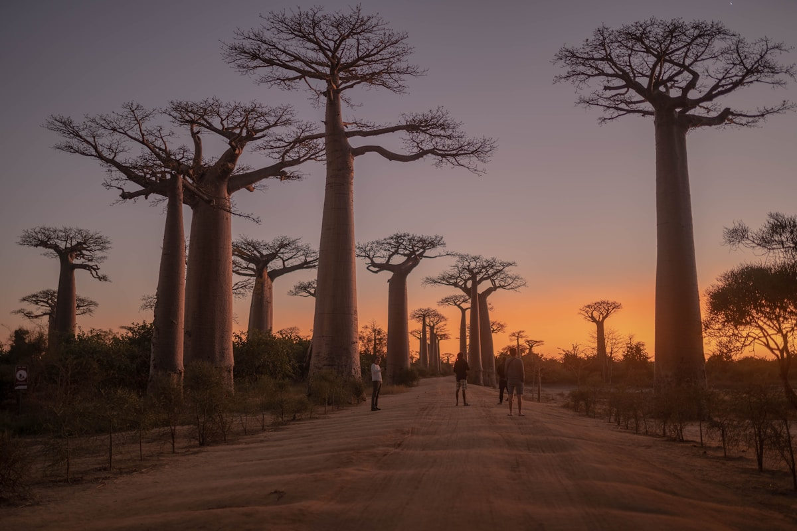
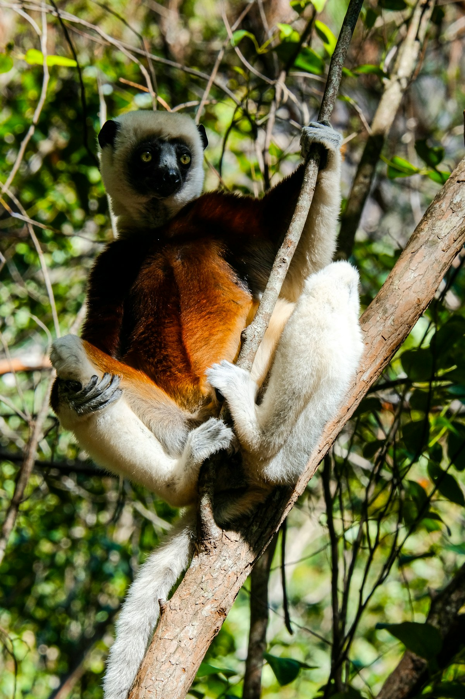
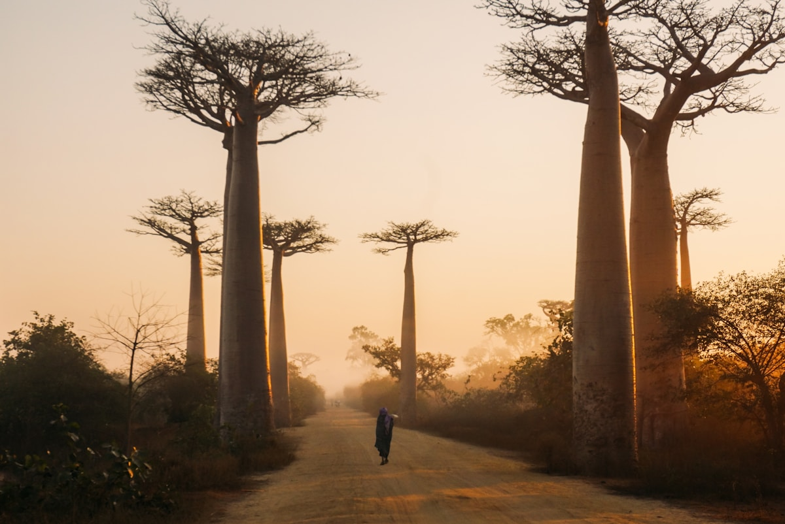
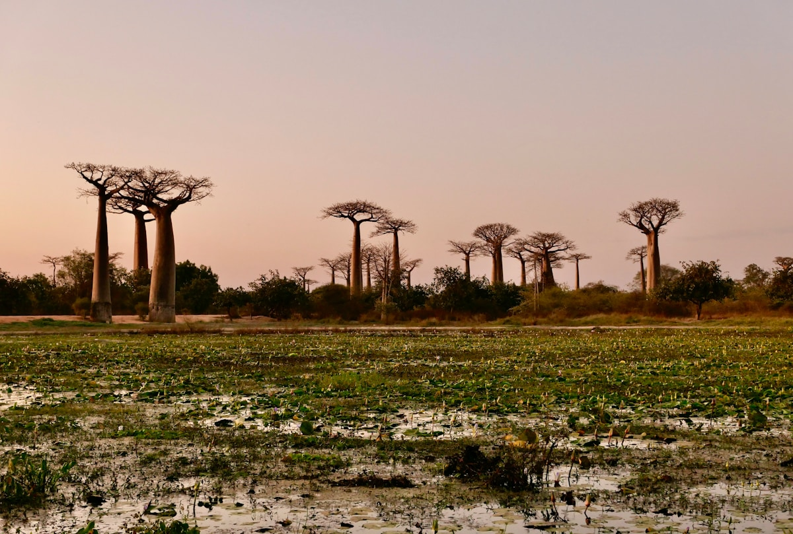
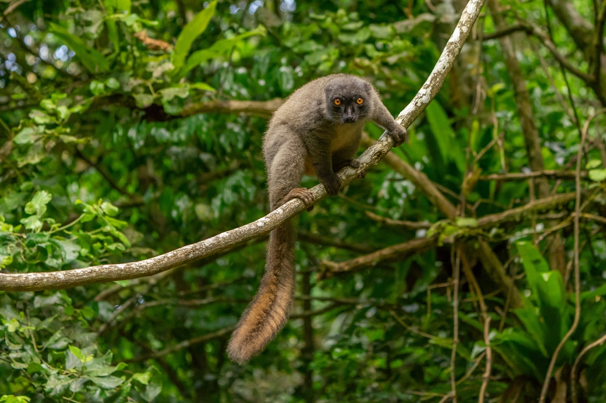
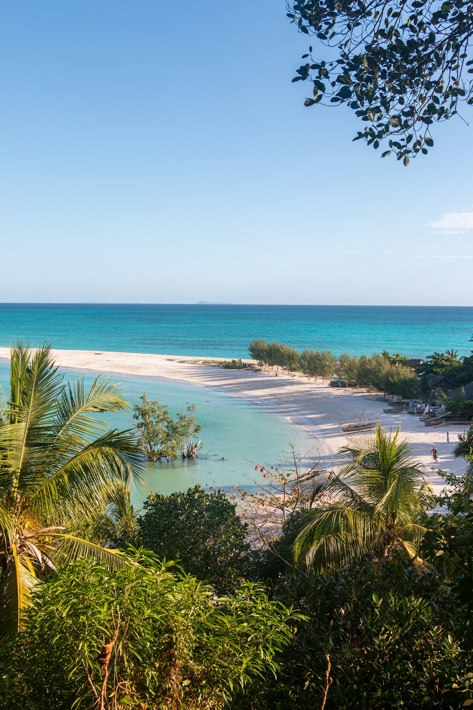
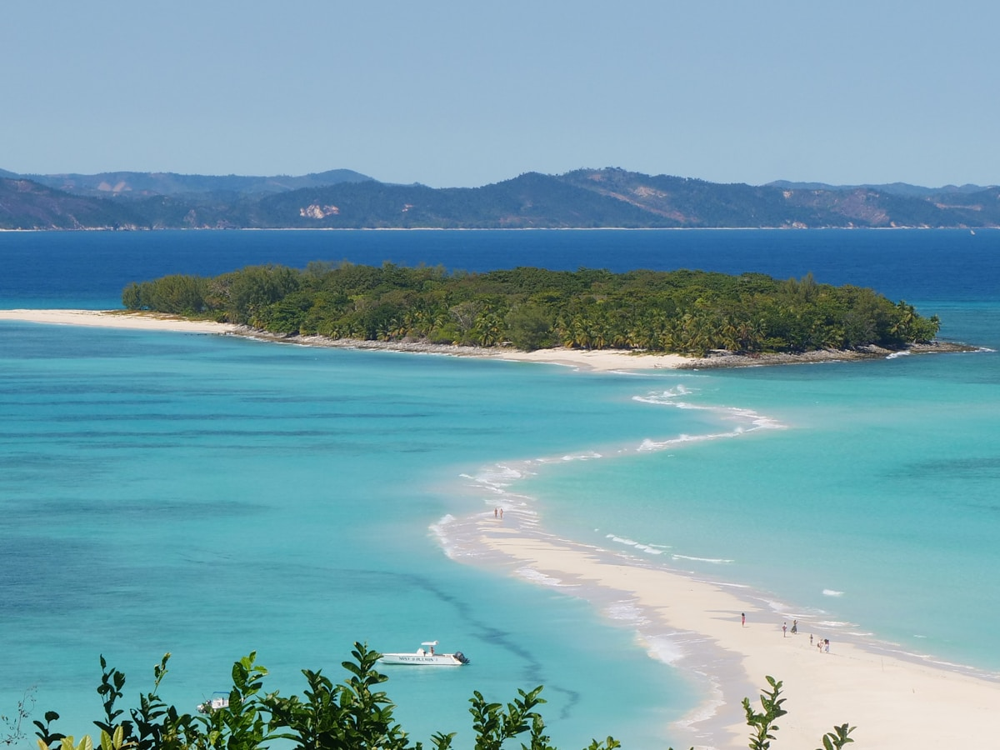
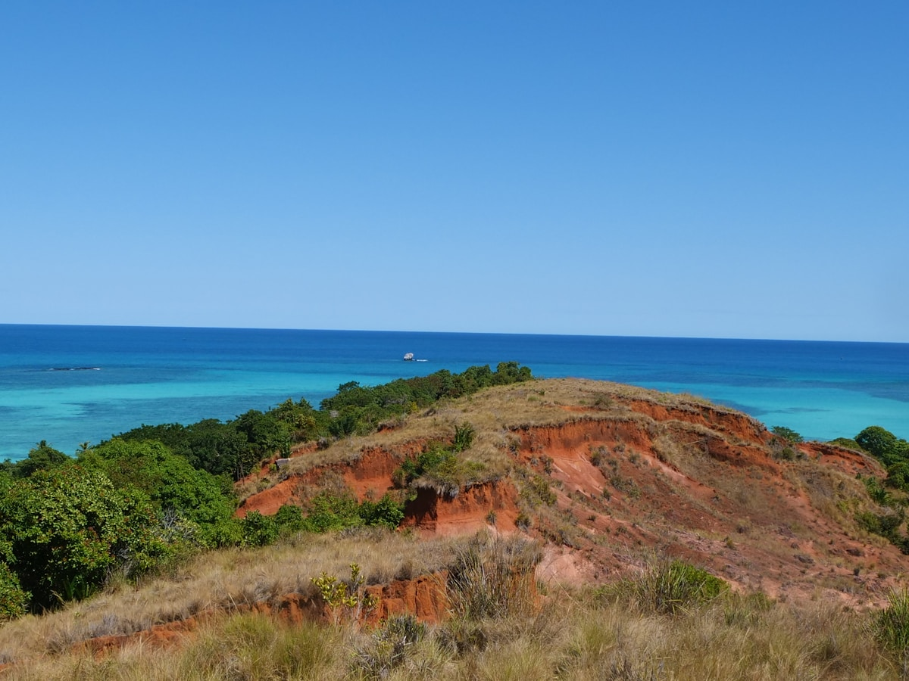

| 事项 | 结论 |
|---|---|
| 事项 | 结论 |
| 签证（最关键） | 中国护照电子签或落地签：提前 1 个月在 evisamada.gov.mg 在线申请，15 天约 35 美元/30 天约 41 美元（2026-02 起涨价）；落地签需备返程机票+酒店单，机场现金缴费 |
| 推荐方案 | 10 天：塔那那利佛 2 天 → 安达西贝 2 天 → 穆龙达瓦 2 天 → 圣玛丽岛 2 天 → 返程 2 天 |
| 行程链 | 塔那那利佛 → 安达西贝 → 穆龙达瓦 → 圣玛丽岛 → 返程 |
| 预算（人均） | 经济 15000–22000 ／ 标准 28000–42000 ／ 舒适 55000–80000（人民币） |
| 三件提前事 | ① 办电子签 ② 订内陆航班（塔那那利佛⇄穆龙达瓦/圣玛丽岛）③ 订国家公园向导（入园必须跟当地向导） |
| 季节提醒 | 5–10 月旱季凉爽最宜；7–9 月圣玛丽岛观鲸黄金期；11 月–次年 4 月雨季路况差，内陆航班易延误 |
| 支付 | 现金为王：偏远地区只收阿里亚里，大城市酒店可刷卡但常收 3–5% 手续费 |
以下为 10 天 9 晚的推荐节奏：以塔那那利佛为轴心，内陆航班解决长距离，包车解决短途。每日主景点 ≤2 个，雨林/沙漠行程集中在凉爽的早晚。
| 日期 | 行程 | 过夜地 | 主题 |
|---|---|---|---|
| D1 抵塔那那利佛 | 转机约 16h 抵达，入住市中心，阿诺西湖+日落漫步 | 塔那那利佛 | 抵达日 |
| D2 | 女王宫 & 老王城 → 安达卡纳高地观景 → Analakely 市场 | 塔那那利佛 | 高原首都 |
| D3 | 塔那那利佛→安达西贝（140km 约 4h），午后狐猴岛 | 安达西贝 | 驶向雨林 |
| D4 | 安达西贝国家公园全日：大狐猴鸣叫 + 雨林徒步 2–3h | 安达西贝 | 雨林全日 |
| D5 | 安达西贝→塔那那利佛✈穆龙达瓦（内陆航班约 1h） | 穆龙达瓦 | 飞向西海岸 |
| D6 | 穆龙达瓦全日：猴面包树大道日出 + 情侣猴面包树日落 | 穆龙达瓦 | 猴面包树日 |
| D7 | 穆龙达瓦✈塔那那利佛✈圣玛丽岛（联程约 6h） | 圣玛丽岛 | 飞向海岛 |
| D8 | 圣玛丽岛全日：观鲸船游 + 伊莱·圣玛丽海滩浮潜 | 圣玛丽岛 | 观鲸海滩日 |
| D9 | 圣玛丽岛休闲：独木舟/皮划艇，午后✈塔那那利佛 | 塔那那利佛 | 海岛收尾 |
| D10 返程 | 市区补货，塔那那利佛✈北京（转机约 16h） | — | 收尾 |
以下为 10 天全程的逐小时执行时间线，可当作「当天打开照着走」的清单。标注 ※ 的可选项视体力与天气取舍。
| 时间 | 事项 |
|---|---|
| 全天 | 北京✈（经亚的斯亚贝巴/内罗毕转机约 16h）✈塔那那利佛伊瓦图国际机场 |
| 13:00–14:30 | 入境：电子签扫二维码或落地签窗口缴费（备现金），换汇点换阿里亚里 |
| 15:30–17:30 | 入住市中心，阿诺西湖 Lake Anosy散步：湖心纪念碑+猴面包树环绕的高原风光 |
| 18:00 | 晚餐：酒店半餐或市中心餐厅，早点休息倒时差（时差 -5h） |
| 时间 | 事项 |
|---|---|
| 08:30–11:00 | 女王宫 Rova & 老王城 Ambohimanga（联票约 1.5 万阿里亚里）：安德里亚纳姆波伊尼梅里纳王朝宫殿，看高原城市全景 |
| 11:30–13:00 | 午餐：Analakely 市场周边小吃或法餐（首都法餐水平在非洲前列） |
| 13:30–15:30 | Analakely 中央市场：香草、红木工艺品、狐猴木雕，记得砍价（还价从 1/3 起） |
| 16:00–18:00 | 安达卡纳高地观景台（Andakana）：日落看 1300m 高原上的红土之城 |
| 时间 | 事项 |
|---|---|
| 08:00–12:30 | 包车前往安达西贝（140km，实测 3.5–4h）：山路+红土路，沿途梯田与猴面包树 |
| 12:30–14:00 | 抵达安达西贝镇，午餐（镇上 Pizza 与马达加斯加菜都有） |
| 14:30–17:00 | 狐猴岛 Lemur Island（约 5 万阿里亚里含向导）：竹狐猴、黑白颈狐猴近距离互动，拍照神地 |
| 18:30 | 晚餐后夜游夜行狐猴探索（可选，约 1.5h）：看鼠狐猴与小螈蠊 |
| 时间 | 事项 |
|---|---|
| 06:30 | 赶早入园（狐猴清晨最活跃），向导带队 |
| 07:00–10:00 | 安达西贝-曼塔迪亚国家公园（外国人门票约 6 万阿里亚里+向导费）：听 Indri 大狐猴鸣叫，看黑白领狐猴、长尾狐猴跳跃树冠 |
| 10:00–12:00 | 雨林徒步 2–3km 硬木步道：变色龙、叶尾守宫、马达加斯加树蛙 |
| 12:30–14:00 | 园区餐厅午餐 |
| 14:30–17:00 | 下午可选：曼塔迪亚国家公园半日（更原始，看大狐猴概率更高）或回镇休息 |
| 时间 | 事项 |
|---|---|
| 06:30 | 安达西贝出发，4h 车程回塔那那利佛（别赶下午航班） |
| 11:00–12:30 | 午餐+提前 2h 到机场 |
| 13:00–14:10 | 内陆航班：塔那那利佛✈穆龙达瓦（约 1h，小飞机，票约 500–800 元提前订） |
| 15:00–16:30 | 入住穆龙达瓦镇，租好第二天日出车/向导 |
| 18:00 | 穆龙达瓦海滩日落，海鲜晚餐（大虾、石斑鱼便宜） |
| 时间 | 事项 |
|---|---|
| 05:30 | 出发猴面包树大道（约 20km），赶日出：晨光中的巨树大道+红土路 |
| 06:30–09:00 | 猴面包树大道（免费）：200 年猴面包树夹道，拍逆光剪影与旱季稻田 |
| 09:30–12:00 | 情侣猴面包树 Baobab Amoureux（免费）：两棵交缠的古树，情侣打卡地 |
| 12:30 | 回镇午餐、午休（中午暴晒不出门） |
| 16:00–19:00 | 傍晚再回大道拍日落与星空蓝调；晚餐尝 Zebu 牛肉与当地朗姆酒 |
| 时间 | 事项 |
|---|---|
| 08:00 | 穆龙达瓦✈塔那那利佛（约 1h），机场中转等下一程 |
| 12:00–13:00 | 塔那那利佛机场内午餐 |
| 14:00–15:30 | 塔那那利佛✈圣玛丽岛（约 1.5h，经图阿马西纳或直飞，观鲸季班次多） |
| 16:30–18:30 | 入住伊莱·圣玛丽（Ambodifotatra），海边散步、预订明天观鲸船 |
| 19:00 | 海鲜晚餐：龙虾、章鱼、椰子饭 |
| 时间 | 事项 |
|---|---|
| 07:30 | 乘船出海观鲸（约 3h）：7–9 月座头鲸在圣玛丽岛海域产仔，跃出水面的概率很高 |
| 10:30–12:00 | 回岸休息，海滩浮潜：珊瑚礁与热带鱼 |
| 12:30–14:00 | 午餐（度假村半餐） |
| 15:00–17:00 | 伊莱·圣玛丽沙滩+灯塔徒步，或皮划艇绕岛 |
| 18:30 | 日落晚餐 |
| 时间 | 事项 |
|---|---|
| 08:30–11:00 | 独木舟/皮划艇探红树林水道，或海边吊床发呆（岛最治愈的方式） |
| 11:30 | 退房 |
| 13:00–15:00 | 圣玛丽岛✈塔那那利佛（约 1.5h） |
| 16:00–18:00 | 入住塔那那利佛，市中心补货：香草、马达加斯加红酒、手工艺品 |
| 19:00 | 告别晚餐 |
| 时间 | 事项 |
|---|---|
| 08:30–10:00 | 自由活动：酒店早餐+最后补货 |
| 10:30–12:00 | 前往机场（约 17km） |
| 12:30–14:00 | 机场退税/免税店：香草与咖啡 |
| 14:30–次日 | 塔那那利佛✈（转机）✈北京，入境到家 |
必去（必去）/ 顺路（顺路）/ 可跳过（可跳过）。

必去
顺路
顺路
必去
必去
顺路
顺路图片为 Unsplash 主题图（猴面包树大道、狐猴、印度洋海滩等均为马达加斯加实景），用于页面配图。更多免费看点：阿诺西湖、Analakely 市场、穆龙达瓦海滩、伊莱·圣玛丽灯塔。
点击左侧节点可在地图上定位；点击地图 marker 会高亮对应节点。坐标为 WGS-84 转 GCJ-02 纠偏后标注。
以下为单人、不含购物的估算，人民币计价；出发地基准北京。汇率按 1 元 ≈ 580 马达加斯加阿里亚里、1 美元 ≈ 7.2 元估算。往返机票按淡季转机 9000–12000 元计，内陆航班 4 段约 2500–4000 元。
| 项目 | 经济（15000–22000） | 标准（28000–42000） | 舒适（55000–80000） |
|---|---|---|---|
| 往返机票 | 转机往返 9000–12000 | 直挂转机 13000–17000 | 灵活票/商务 22000–30000 |
| 内陆交通（4 段航班+包车） | 航班经济+拼车 2500–4000 | 航班+包车 5500–8000 | 全包车+优先航班 12000–18000 |
| 住宿（9 晚） | 民宿/旅馆 200–400/晚 | 中档酒店/度假村 800–1400/晚 | 精品度假村 2000–3200/晚 |
| 门票+向导+活动 | 基础门票约 800–1500 | 含观鲸/狐猴岛 2500–4000 | 含包场观鲸+私人向导 6000–9000 |
| 餐饮（10 天） | 街摊+酒店半餐 1500–2500 | 餐厅+半餐结合 4000–6000 | 全餐厅+酒水 9000–13000 |
对海岛+潜水更感兴趣，把圣玛丽岛换成诺西贝 Nosy Be（岛西北）：珊瑚礁潜点更多、度假村更成熟，与穆龙达瓦一样有直飞。圣玛丽岛胜在观鲸，诺西贝胜在潜水与浮潜，二选一即可。
带娃家庭推荐：安达西贝砍为 1 天（狐猴岛互动对儿童最友好）、穆龙达瓦留 1 天、圣玛丽岛 3 天纯度假；全程包车+半餐，避免夜路。老人慎选穆龙达瓦小飞机，可改包车+夜班卧铺大巴，但要多留 1–2 天路缓冲。
| 方式 | 时长 | 参考价 | 备注 |
|---|---|---|---|
| 转机（唯一） | 北京→塔那那利佛约 16h | 往返 9000–17000 元 | 经亚的斯亚贝巴/内罗毕/巴黎，埃塞俄比亚航空班次最多 |
| 直飞 | — | — | 中马暂无直航 |
| 国际铁路 | — | — | 无陆路铁路连接，只能飞机 |
| 区域 | 价格/晚 | 优点 | 短板 |
|---|---|---|---|
| 塔那那利佛·市中心 | 经济 200–400 / 标准 500–900 | 女王宫/市场步行可达 | 老城坡路多，早晚治安一般 |
| 安达西贝·镇区/园边 | 旅馆 250–500 / 生态度假村 700–1500 | 离园近，雨林氛围 | 旺季房紧张，提前订 |
| 穆龙达瓦·海滩区 | 经济 250–450 / 标准 600–1200 | 日落海滩，海鲜近 | 小镇配套简单 |
| 圣玛丽岛·伊莱·圣玛丽 | 度假村 800–3000（含餐） | 观鲸船码头近，海滩度假 | 贵，一价全包占多数 |
| 塔那那利佛·机场区 | 标准 500–900 | 转机过夜方便 | 距市区远，无景点 |